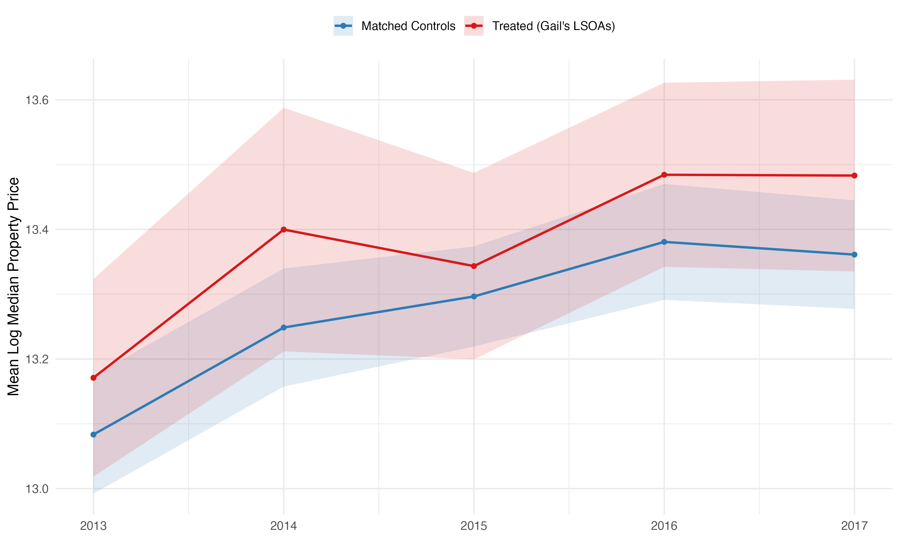
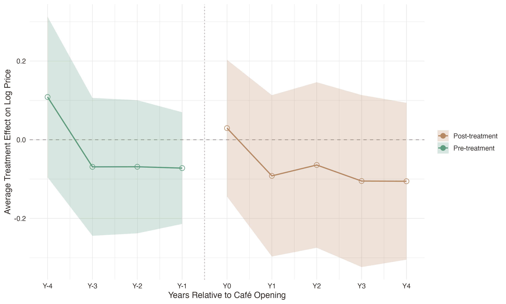

1Introduction
Dubbed online as the “Gail’s effect,” the arrival of a Gail’s café in London neighborhoods has become a sign that an area is undergoing a rapid socioeconomic transition (Fuller, 2026; Gogarty, 2024; Newkey-Burden, 2025). This popular cultural association between premium consumption amenities and neighborhood change reflects the broader pattern of urban gentrification. The foundational sociological theories of gentrification identify the rent gap as the primary mechanism driving neighborhood reinvestment and displacement (Glass, 1964; Smith, 1987). Subsequent work in urban studies has broadened these frameworks to incorporate the role of consumption, focusing on the ways that retail in working-class neighborhoods functions to reshape community identity and attract higher-income residents (Zukin, 1998). The standard economic model for analyzing the relationship between neighborhood amenities and housing costs uses hedonic pricing, a method that breaks down property prices into the implicit value of individual characteristics such as location, size, and local offerings (Rosen, 1974). Recent research has applied this framework to a wide range of amenities, documenting positive price effects associated with proximity to schools, green spaces, and Whole Foods grocery stores (Anderson, 2017; Gibbons et al., 2013, 2014; Hoelzlein & Miller, 2024; Law et al., 2019). Despite the cultural relevance of the Gail’s effect and the growing body of literature on amenity-driven gentrification, no study has rigorously tested whether premium café chain openings are causally associated with neighborhood property price changes in London. Ultimately, whether consumption amenities—such as Gail’s cafés—cause or merely accompany gentrification remains an empirically contested question.
This study exploits the staggered timing of Gail’s London expansion to provide the first empirical test of the Gail’s effect. Beginning in 2018 (Algospark, n.d.), Gail’s rapid expansion across London created a natural quasi-experimental setting in which the opening dates and geography of cafés can be exploited for causal identification. The central research questions are therefore:
- Do Gail’s café openings lead to gentrification by exerting an independent causal effect on London neighborhood property prices?
- Or does the chain simply select into areas where prices were already rising?
Utilizing a staggered difference-in-differences (DiD) design with the Callaway-Sant’Anna estimator (Callaway & Sant’Anna, 2021), this model uses variation in the timing of Gail’s openings across London Lower Layer Super Output Areas (LSOAs) between 2018–2024 to identify the treatment effect relative to a propensity score-matched control group of never-treated LSOAs. This study makes three specific contributions to the existing literature: (1) it provides the first empirical analysis of the relationship between premium café openings and property prices in London, (2) it introduces a novel application of the Callaway-Sant’Anna DiD estimator to urban amenity pricing, and (3) it contributes to the literature about whether aspirational consumption amenities are leading or lagging indicators of gentrification.
2Methods
2.1Data
Gail’s locations were sourced from OpenStreetMap (OSM) using a bounding-box query over the Greater London area, filtering all nodes and ways tagged with the case-insensitive name “GAIL” (OpenStreetMap contributors, 2017). The café postcodes were then recovered using the OSM tagging fields, and locations without an OSM postcode were reverse geocoded using their location point coordinates and the Postcodes.io API (Walczak, 2023). Locations were filtered to a treatment window of 2018–2024; the 2018 start date captured Gail’s deliberate expansion phase, during which the chain pursued an explicit growth strategy (Algospark, n.d.), while the 2024 end date ensured that the final treatment cohort retained a sufficient post-treatment window for observing housing prices. The OSM creation timestamp was used as a proxy for the Gail’s locations’ physical opening dates: because cohort assignment is determined by calendar year, any within-year lag between a café opening and its OSM entry creation does not affect assignment—a condition that is generally met for well-mapped urban locations such as London.
LSOAs were used as the spatial unit of analysis as a proxy for neighborhoods. These census-generated geographies were designed to be internally consistent in population size (approximately 1,500 residents) and socioeconomic composition (Office for National Statistics, 2023), and are widely used in urban research in the UK. Although the treatment period spans from 2018–2024, the 2021 LSOA definitions were adopted in order to align with the most current Office of National Statistics geographic framework. Each Gail’s treatment location was mapped to its corresponding LSOA via postcode lookup; where two cafés were assigned to the same LSOA, only the first-opening café was kept.
The outcome variable was constructed from the Land Registry Price Paid Data (PPD), a record of residential property transactions in England and Wales (HM Land Registry, 2026); because registration is legally required, the PPD functions as a near-complete census of market transactions. However, the PPD excludes non-market transactions—including repossessions and right-to-buy transfers—meaning that the data used in the study only reflects open-market conditions. Residential transaction data for all London LSOAs were retrieved from the Land Registry Linked Data SPARQL endpoint covering 2013–2025 so as to assess pre-treatment housing trends as well as to capture an adequate amount of post-treatment price responses for the final cohort. Individual PPD transactions were then aggregated to an annual median housing price per LSOA; the median was chosen over the mean to reduce sensitivity to high-value outliers common in London’s luxury property market (Marsden, 2015). LSOAs with fewer than 3 transactions in a given year were excluded from that year’s observation to avoid unreliable price estimates based on sparse markets. The final outcome variable was the natural log of the annual median property price per LSOA; logarithmic transformation is standard in hedonic price models where property price distributions are right-skewed, and this specification allows for the regression coefficients to be directly interpreted as proportional effects on price rather than absolute price changes.
To characterize pre-existing neighborhood conditions, the study incorporated the 2019 Index of Multiple Deprivation (IMD), a standard measure of socioeconomic disadvantage that combines indicators across income, employment, education, health, crime, housing, and living environment (Ministry of Housing, Communities & Local Government, 2019). Although the 2019 data postdates the earliest cohort by one year, prior research has demonstrated that LSOA-level deprivation rankings exhibit high stability between IMD releases (McLennan et al., 2019), such that the 2019 scores provide a reliable approximation of the neighborhood conditions that prevailed throughout the pre-treatment period. Before DiD estimation, treated London LSOAs with Gail’s location openings were matched to control LSOAs using nearest-neighbor propensity score matching; matching variables of baseline median log-price, baseline price trend, IMD overall score, education sub-score, and employment sub-score were chosen to capture pre-treatment neighborhood comparability on price level, price trajectory, and socioeconomic context. The propensity scoring method excluded geographic distance so as to avoid spatial clustering of controls and potential spillover effects. Matching was performed using logistic propensity scoring with a 1:3 nearest-neighbor algorithm without replacement and a caliper of 0.02 standard deviations to guard against poor-quality matches. The final validated panel contained 403 annual price observations from treated LSOAs and 1,165 from their matched controls.
2.2Parallel trends tests
The parallel trends assumption of this DiD design requires that, in the absence of a Gail’s opening, property prices in treated LSOAs would have evolved along the same trajectory as those in the matched control LSOAs. After matching the treatment and control LSOAs, most standardized mean differences were below 0.1 (Table 1), indicating an adequate observed covariate balance (Rosenbaum & Rubin, 1983). By restricting estimation to matched LSOAs, the final dataset controls for observable pre-treatment differences in price level, price trend, and socioeconomic composition that could confound the DiD estimate. This matched design strengthens the plausibility of the parallel trends assumption by ensuring that the control group is drawn from LSOAs with similar pre-treatment trajectories to those that received a Gail’s.
| Covariate | Mean Treated | Mean Control | Std. Mean Diff. | Var. Ratio | eCDF Mean |
|---|---|---|---|---|---|
| Distance | 0.0136 | 0.0136 | 0.0002 | 1.025 | 0.0003 |
| Baseline log price | 13.373 | 13.317 | 0.1419 | 0.944 | 0.0357 |
| Baseline price trend | 0.0709 | 0.0692 | 0.0237 | 1.349 | 0.0323 |
| IMD score | 16.905 | 17.522 | −0.0715 | 0.811 | 0.0526 |
| Education score | 6.182 | 5.677 | 0.0981 | 1.051 | 0.0416 |
| Employment score | 0.0654 | 0.0696 | −0.0963 | 1.112 | 0.0484 |
As shown in Figure 1, treated and matched control LSOAs follow closely-aligned price trajectories across the baseline pre-treatment window: the overlap in confidence intervals throughout this period is consistent with parallel trends (Angrist & Pischke, 2009). To further assess the parallel trends assumption, pre-treatment price trajectories for treated and control LSOAs were formally evaluated with a fixed-effects OLS estimation over the baseline period. The treatment-by-year interaction coefficients in Table 2 indicate that the treated and matched control LSOAs experienced statistically indistinguishable price growth in the years preceding any café opening, consistent with the parallel trends assumption that underpins this study’s DiD design. Thus, the covariate balance, visually parallel pre-treatment trajectories, and lack of statistically significant interaction terms support parallel trends between the treated and control groups.

| Estimate | Std. Error | t-value | p-value | |
|---|---|---|---|---|
| Control × 2013 | 0.0304 | 0.0595 | 0.510 | 0.611 |
| Control × 2014 | −0.0246 | 0.0689 | −0.357 | 0.722 |
| Control × 2015 | 0.0756 | 0.0594 | 1.273 | 0.205 |
| Control × 2016 | 0.0195 | 0.0551 | 0.354 | 0.724 |
| RMSE: 0.1658 Adj. R2: 0.8332 Within R2: 0.0077 | ||||
2.3Analysis
The primary causal estimate was derived from the Callaway-Sant’Anna staggered DiD estimator—this model computes separate average treatment effects on the treated (ATTs) for each cohort period before aggregating them into summary statistics weighted by cohort size (Callaway & Sant’Anna, 2021). This cohort-by-period structure was well-suited for analyzing café openings because Gail’s expanded in waves across different parts of London: if the price premium for opening a café differs between years, the Callaway-Sant’Anna estimate explicitly captures this variation rather than compressing it into a single coefficient. The Callaway-Sant’Anna estimator was specifically chosen over a standard two-way fixed effects (TWFE) measurement because of the rolling openings of Gail’s locations; TWFE is known to be biased under staggered adoption when treatment effects are heterogeneous across cohorts due to using already-treated units as implicit controls (Goodman-Bacon, 2021), but the Callaway-Sant’Anna estimator avoids this bias by restricting each cohort’s comparison group to never-treated LSOAs only. However, as a robustness check, a TWFE model was also estimated to assess the direction and magnitude of the Callaway-Sant’Anna model estimates—if the estimates diverged, this suggests that treatment effects are heterogeneous across cohorts and would indicate that TWFE is unreliable for this study design.
The Callaway-Sant’Anna ATT estimates were interpreted as log-point differences of the median property price for one LSOA in one year, which were convertible to approximate percentage effects using (eATT − 1) × 100. The estimator also used a doubly-robust method that combined an outcome regression with an inverse-probability weighting step, providing an additional layer of robustness beyond the matched sample—the inclusion of the education sub-score, baseline log-price, and baseline price trend in this regression specification absorb the residual imbalance between the treated and matched control LSOAs that was not fully accounted for by propensity score matching. Standard errors were clustered at the LSOA level because residuals within an LSOA are likely correlated across years. The model ultimately estimates two main aggregations of the ATT: (1) a simple overall ATT that averages all estimates weighted by cohort size and (2) an annual cohort-specific ATT. These aggregations allow the analysis to address both the average effect of a Gail’s opening across all treated LSOAs and years as well as whether the price change has been consistent across Gail’s different expansion waves.
3Results
The Callaway-Sant’Anna doubly-robust estimator yielded an overall ATT of −0.079 log points (95% CI: [−0.202, 0.043]), corresponding to an approximate 7.59% reduction in neighborhood median property prices in treated LSOAs relative to their matched controls, though this estimate is not statistically significant at the α = 0.05 level and the null hypothesis cannot be rejected. The dynamic aggregation—which averages effects by event time—produced a similar negative point estimate to the overall aggregation (dynamic ATT: −0.067 log points; 95% CI: [−0.185, 0.050]). Figure 2 plots the dynamic ATT from four years before to four years after each café opening: from event time +1 onward, the dynamic ATT estimates are negative, yet none exhibit statistical significance. Thus, while the point estimates consistently suggest a slight negative association, the width of the confidence intervals prevent any definitive conclusion about the existence or direction of an aggregate Gail’s housing price effect.

Disaggregating the ATT by cohort reveals considerable heterogeneity across Gail’s expansion waves. Of the six post-treatment cohorts, only the 2021 cohort produced a statistically significant result (ATT: −0.271 log points; 95% CI: [−0.312, −0.229]), indicating that LSOAs where a Gail’s opened in 2021 experienced a statistically distinguishable reduction in median property prices relative to their matched controls. Beyond this result, cohort-specific ATTs vary considerably both in direction and magnitude (Table 3). The positive estimate for the 2018 cohort and the wide standard errors for the 2020 cohort reflect the small number of treated LSOAs per year, and estimates should be interpreted with caution given the limited statistical power available at the cohort-level.
| 95% Conf. Interval | ||||
|---|---|---|---|---|
| Cohort | ATT | Std. Error | Lower | Upper |
| 2018 | −0.0669 | 0.0357 | −0.1370 | 0.0031 |
| 2019 | 0.1304 | 0.0882 | −0.0424 | 0.3032 |
| 2020 | −0.3254 | 0.2746 | −0.8637 | 0.2129 |
| 2021 | −0.2707* | 0.0212 | −0.3122 | −0.2291 |
| 2022 | −0.1363 | 0.0943 | −0.3210 | 0.0485 |
| 2023 | −0.0764 | 0.1257 | −0.3227 | 0.1699 |
| * Confidence band excludes zero. | ||||
The TWFE robustness check generated a post-treatment coefficient of −0.075 log points (95% CI: [−0.123, −0.028]) that is statistically significant at the α = 0.05 level. This estimate closely mirrors the Callaway-Sant’Anna overall ATT in both direction and magnitude—however, this convergence reflects similarity in the weighted average treatment effect across cohorts rather than homogeneity of cohort-specific effects, which vary considerably from +0.130 to −0.325 log points (Table 3). The TWFE specification compresses this heterogeneity into a single pooled coefficient, and should therefore be interpreted as an average across Gail’s expansion waves rather than as a stable, cohort-invariant effect.
4Discussion
4.1Main Findings
This study finds that Gail’s café openings are associated with a negative but statistically insignificant effect on London neighborhood median property prices in treated LSOAs, meaning that the null hypothesis of zero treatment effect cannot be ruled out. This result stands in contrast to the popular cultural narrative of the “Gail’s effect”—the notion that the arrival of the premium café chain signals and accelerates neighborhood gentrification and rising property values. These findings thus provide no statistically credible evidence of an amenity-driven positive price premium and, if anything, the point estimates consistently lean in the opposite direction.
The statistically significant result that the 2021 cohort of Gail’s openings yielded a −23.72% decrease in LSOA housing prices is difficult to interpret in isolation from the wider market conditions of that period: this cohort coincides with the immediate post-COVID period where UK property markets experienced a spatial redistribution of demand away from centralized urban areas such as London (Gallent & Madeddu, 2021). The 2021 negative estimate—and possibly all post-COVID negative estimates—most likely reflect broader macroeconomic disruption rather than a café-specific effect. Similarly, the convergence of the Callaway-Sant’Anna DiD and TWFE point estimates signals that the consistently negative direction is unlikely to be an artifact of model specification, but rather a lasting signal of COVID-induced market disruption during the treatment window. Further studies could address these pandemic-specific shocks by including a post-2020 dummy variable or adding neighborhood-level controls (e.g. work from home rates).
The absence of a positive price premium contrasts with the well-documented “Whole Foods effect” in the United States where the opening of these health-focused, aspirational grocery stores is associated with significant housing appreciation (Anderson, 2017; Hoelzlein & Miller, 2024); this divergence points to the possibility that the mechanism by which upscale food retail affects property prices may operate differently in London than in the US. Furthermore, this study’s negative point estimates are consistent with urban economics literature that treat premium retail amenities as lagging indicators of gentrification rather than leading (Danenberg, 2024; Rains, 2020). Gail’s has pursued an explicit growth strategy of targeting locations with high foot-traffic, proximity to public transportation, and a pre-existing professional demographic—all characteristics that correlate with neighborhoods already on an upward price trajectory; by the time a café opens, the most significant price appreciation has likely already occurred and is then reflected in the inflated LSOA baseline prices. Additionally, it may be that the arrival of a Gail’s signals that a neighborhood has completed its transition: demand decreases from buyers and property prices drop because the neighborhood has already been gentrified and hit its peak. Beyond the gentrification context, hedonic pricing literature shows that localized amenity effects on property prices are highly context-dependent, and effect sizes substantially vary by baseline neighborhood characteristics, city-level housing supply, and the nature of the amenity itself—the imprecision of the DiD model is therefore not surprising given the heterogeneity of the LSOA sample (Gibbons et al., 2013; Rosen, 1974). Overall, these results challenge the popular narrative that premium café chains such as Gail’s drive gentrification by increasing property prices.
4.2Limitations
The most fundamental limitation of this study is the use of the OSM creation timestamp as a proxy for café opening dates: if OSM entries systematically lag behind physical openings by more than a few months, cohort assignment may misclassify a non-trivial share of treated LSOAs. This systematic mismeasurement of treatment dates would introduce an attenuation bias that would push effect estimates toward zero, partially explaining the statistical insignificance of the ATT. Compounding this operationalization concern, the treated London dataset of 31 LSOAs spread across six cohort years is relatively modest, and this small sample size considerably limits the study’s statistical power. The study’s underpowering is primarily inherent to the scale of Gail’s London expansion during the 2018–2024 treatment window rather than a consequence of methodological choices: the chain opened approximately 45 new London locations during the treatment period, of which 31 were captured with sufficient data quality for study inclusion. As a result of this constrained statistical power, the overall ATT confidence interval is wide enough to encompass both meaningful pricing effects and zero, and the null findings should be interpreted with this imprecision in mind. In conjunction, the potential for measurement error in treatment timing and the limited sample size represent salient data constraints, and both would need to be resolved before the DiD estimates could be interpreted without ambiguity.
Furthermore, the Land Registry PPD dataset does not contain the detailed property information (e.g., property size, number of rooms, floor area) that standard hedonic models would include as controls. While the LSOA fixed effects absorb time-invariant differences across neighborhoods, they cannot account for within-LSOA compositional shifts; if a café opening systematically attracted different housing types to the market, this inability to control for property-level characteristics would introduce omitted variable bias that the PPD cannot account for. The omission of property-level controls is also consequential for the parallel trends assumption: although the parallel trends assumption is supported by the pre-trend tests, unobserved characteristics remain untestable. Gail’s uses the consultancy Algospark to inform their location decisions, but it is likely that their exact forecasting data is not fully captured in the matching covariates (Algospark, n.d.); the parallel trends assumption would not hold in this case, and the ATT would be biased.
In addition to the limitations of the omitted variables, the external validity and generalization beyond Greater London Gail’s locations remain a concern. London’s urban housing market is characterized by supply constraints and structurally elevated prices (Bosetti et al., 2017; Canepa et al., 2022; Hilber & Vermeulen, 2016), and therefore these conditions may not transfer to other cities such as Oxford, where Gail’s has expanded more recently (Evans, 2026) and where the relationship between food retail and property prices is likely mediated by a different set of market dynamics. In addition to the London-only data limitation, this study is also constrained by its focus on Gail’s alone. Blank Street Coffee—a comparable premium chain that entered the London market in 2022—was excluded from the treatment definition, but potential Blank Street openings in control LSOAs may have introduced a treatment-like signal into the comparison group and attenuation bias into the ATT (Hansen, 2022). While these limitations are important, they largely reflect data constraints rather than flaws in the study design. Given the available data, the Callaway-Sant’Anna DiD framework used in this study provides a principled identification strategy for a research question that has thus far lacked rigorous empirical treatment.
4.3Future Research
To resolve the study’s current limitations, future methodologies should replace the OSM creation timestamp with verified opening dates drawn from news articles, Companies House filings, or direct correspondence with Gail’s corporate office; eliminating this core source of measurement error would likely narrow the ATT confidence intervals and allow for stronger causal inference. Extending the outcome variable from PPD sales prices to include rental prices would similarly enrich the data by providing a more complete picture of London housing. Because rental outcomes are an important facet of housing costs and would help to establish if Gail’s openings affect tenants rather than buyers, future work should address this data limitation by pulling from platforms such as Rightmove, SpareRoom, and Zoopla.
The present study’s identification strategy could also be strengthened by using a regression discontinuity design that compares housing costs inside and outside a pre-defined distance around each café location. This spatial approach would provide causal identification similarly to that of DiD, but would not have to rely on the parallel trends assumption. In addition to extending the methodologies, future work could also broaden the treatment definition to include Blank Street and other aspirational consumption amenities such as independent bookshops, natural wine bars, or Pilates studios. If the null finding replicates across amenity types, this would be stronger evidence that premium retail openings are lagging rather than leading indicators of gentrification. Ultimately, this study provides the first empirical investigation into the Gail’s effect. Further progress will depend on improved data and expanded methodologies, but the approach here offers a clear and principled starting point.
5Conclusion
This study set out to test whether the cultural association between Gail’s café openings and London neighborhood gentrification—the Gail’s effect—has a detectable causal basis in property price data, exploiting the staggered timing of Gail’s London expansion between 2018–2024 as a quasi-experimental setting for DiD identification. The Callaway-Sant’Anna doubly-robust estimator yielded an overall ATT of −0.079 log points, an estimate that was directionally consistent across both the simple and dynamic aggregations as well as mirrored by the TWFE robustness check; however, this ATT did not achieve statistical significance and the null hypothesis of zero treatment could not be rejected. The only statistically significant finding of a −0.271 log point effect for the 2021 Gail’s opening cohort most plausibly reflects the spatial redistribution of housing demand during the immediate post-COVID period. These findings carry several implications for how London residents, policymakers, and researchers interpret the arrival of premium consumption amenities in urban neighborhoods. The results are most consistent with Gail’s as a lagging indicator of neighborhood socioeconomic transition than as an independent driver of property price increases. The chain appears to select into neighborhoods with pre-established price trajectories, arriving after the most significant property appreciation rather than precipitating it. This interpretation aligns with previous work in urban economics and gentrification research that treat consumption amenities as markers of completed neighborhood transition (Chapple & Zuk, 2016), yet stands in contrast to the US-based “Whole Foods effect” literature (Anderson, 2017; Hoelzlein & Miller, 2024). These contrasting findings suggest that the mechanism by which upscale food retail capitalizes into property prices may operate differently in London’s housing market than in American urban contexts. Further, this study’s null result should not be read as definitive evidence that no Gail’s effect exists; the combination of a small sample, approximate treatment timing via OSM creation timestamps, and the absence of property-level hedonic controls are limitations that constrain the precision of the estimates. Thus, the “Gail’s effect” may be real, but the present evidence suggests that it is a reflection of neighborhood change already underway rather than the engine driving it.